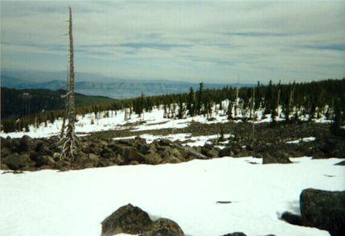
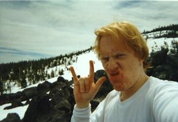
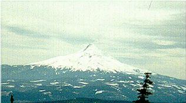

Mount Defiance



Inspired by the view in my hiking guidebook, and by Mazama member’s assertions that Mount Defiance offers one of the most difficult hikes in Oregon, I gathered my magical charms for another journey to the wilderness. I used Kris’s pack (sorry darling!) with snowshoes strapped to the back, since I knew I would encounter snowbanks eventually.
Mount Defiance is the highest point in the ruggedly beautiful Columbia Gorge. This scenic and productive waterway was formed by the constant flow of water from mountains in Idaho and points south and east for millions of years. As lava flows criss-crossed eastern Oregon and Washington the strong current of water easily pushed through the soft volcanic materials, eventually cutting a gorge to the sea. There are many hiking trails here, and during the spring you can usually see a party of Mazamas or Ptarmigans hailing each other and examining each other’s gear.
Although the day was clear, I passed only one hiker all morning. I started up the switch-backing trail at 8 am, crossing streams and snowbanks occasionally. Progress was slow through the humid forest, but the views of the Gorge below became better with each step. It’s very odd how that works: you think you’ve found the very best view spot. Then, a moment later you notice another little platform about 3 feet higher. Standing there, the view seems 3 times as dramatic and high. Little things like this amaze me sometimes…
After about 1.5 miles hard packed snow invaded the trail. Oddly, though it was melted everywhere else, it filled the trail like a trough. The trail flattened, then steepened, and deeper snow filled the ridge, finally prompting me to put on my snowshoes. I worried a bit about losing the route, but old tracks in the right places kept me heading south and up. On the east and west the ridge drooped gently but steadily.
Now I could see cliffs ahead on my right. When I finally emerged from the treeline after the tremendous elevation gain of the morning I was thunderstruck by the beautiful mix of sparse tree cover, exposed rock, snow and sky before me.
Choosing to eat lunch perched on boulders, I was in heaven or on Mars for an hour. At this point I really started to appreciate the mystery of landscape above the trees. Ascending St. Helens a few weeks later I continued this appreciation, but that’s another story…
With snowy Adams, St. Helens and Rainer to the north, I continued south up snowfields broken by rocky outcroppings. To my right, Bear Lake appeared far below as the cliffs steepened. Mount Defiance was a round hill just ahead. As I grew closer, I entered forest again and followed snow-mobile tracks that appeared to go to the top. The tracks ended and a blast of wind from the south woke me up from my long trudge. Traversing a hillside, Mt. Hood’s brutal north face suddenly towered in the distance, and with a gentle climb, I was on Mount Defiance. Greeted by a radio substation, I was too awed by the view to be chagrined. The time was 1:30 PM, and I was exhausted after 5.5 hours of steady hiking, mostly through snow.
I drank in the view, ate a “Twix” bar while sitting on my Thermarest pad, sighed, got up and headed home. First I looked down the steep west side of Mount Defiance to Bear Lake far below. It appeared to be frozen. I cataloged this for future adventures. Hmm…winter climb of Mount Defiance…descend to frozen lake…camp…next day, traverse north side of Defiance, heading east, finally turning south to Starvation Ridge and home! Yay! Perfect!
On the way down, the adventure really begins. Arriving at the rocky promontory where I ate lunch, I happened upon a party of three. Two 20-something OGI graduate students, and a middle-aged mountaineer. I’ll call them John, Mark and Jim respectively. Jim was from Oklahoma and Mark from Georgia so we had some friendly rivalry vis-a-vis my Texas origins. One thing we agreed upon was that we loved the country HERE for it’s varied topography and wild, free places.
I had intended to descend the way I came, rather than taking the Starvation Ridge trail down to the trail-head because of the snow. However, this party, who had followed my tracks up, invited me to accompany them down Starvation Ridge, and I accepted. Since they had maps, and seemed to know what they were doing, it seemed quite an opportunity.
We set off to the west, hoping to turn south on the Ridge. John and Mark wore shorts and fanny packs, sinking to their thighs in the snow. I don’t know how they could stand it! Jim was more suitably dressed, with a heavy pack like me. My snowshoes made the going easier for me, so I blazed the trail.
At this point we (I say we because I was equally responsible, however I let myself feel that I was part of a party, and was not eager to take leadership or even worry about our progress, a big mistake) started wondering where we were and chose an almost random direction to change to. After doing this several more times, talking all the while, we had thoroughly bamboozled ourselves. I proposed going back the way we had came, but the others were confident that we didn’t need to do that. Now I wish I had formally left the party at that point, exchanging phone numbers in case of emergency. But I went with the flow instead.
Soon we were going up ridges, then back down when there was no trail at the top. We tried to head south, following a snow-covered rushing creek, punching deep holes in the snow from time to time. The brush closed around us. We had thousands of feet to descend, and it was after 5 PM. At this point I began to realize I might spend the night out here…
John and Mark were blazing ahead of Jim and I, with me acting as message shouter between Jim and the others. Even as the terrain steepened, and I was nearly falling down the rotten riverbank I could not keep up with them, nor could Jim. As more creeks joined the north-flowing river, it became a small but dangerous torrent. Jim had me encourage the others to move away from the riverbank, and climb up to the ridge for safety. To do this, I used all my strength to {\em run} down to them (with clanking pack and snowshoes), and give them this message.
“Well, you’re up there and we’re down here, aren’t we,” was the sullen reply.
“I’m not telling you what to do, I’m just giving you a piece of advice,” I said.
After a long pause, “Well…we figure we’ll just stay by the river. Bye.”
With that they were gone, apparently intent on getting away from us. I wondered why. I think they were tired, and worried about staying overnight. They were willing to be very reckless, and abandon concern for our safety and think only of themselves. I found it shameful that people would abandon a party this way, remembering my own desire/reluctance to leave when we became lost earlier. I would never have just disappeared.
Here I waited for Jim to catch up. Puzzled by the news, he suggested we go up the ridge in search of the trail. After some hard going, we were successful in finding the trail, to my great happiness. I wouldn’t leave a worried wife at home that night! This was such a relief since I know Kris worries about my safety.
I think Jim was glad I waited for him, and maybe a little surprised. To me though, it was a matter of course; I would not abandon any party member, and Jim was our most experienced member anyway. He gave me one of his water bottles, which I was very thankful for, having run out of water hours before. At this point we ran down the steep trail, Jim blowing his whistle. We shouted down the valley on the east, trying to warn John and Mark of the impending waterfall and bring them up to the trail. There was no reply.
Just as darkness fell, and the clouds grew threatening, we reached the trail-head. We had talked about equipment, experiences and the reason for visiting the back-country on the way down. I enjoyed noting that someone older and more experienced still had the primal, unexplainable need to slog through the mud out here in search of magic. I suppose that once you have awakened to this adventure, you can never go back, you can never grow bored.
We guessed that a jeep in the parking lot belonged to Mark and John. This was confirmed hours later by the police. When I said good-bye to Jim it was full dark and beginning to rain. The temperature fell to about 30 degrees in the night.
Jim called me at home, stating that he left the trail-head at 10 PM. We recognized the need for a search party the next day, and I said I would go back to help. Thankfully, after a stressful night, Jim called and said the police told him that the hikers emerged from the trees early Sunday morning. They had no comment for us.